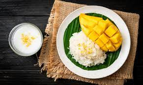

COMIDA TAILANDESA
La comida tailandesa es conocida por su deliciosa combinación de sabores: picante, dulce, ácido y salado. Aquí tienes algunas comidas típicas de Tailandia:
Pad Thai
Es uno de los platos más famosos de Tailandia, el Pad Thai consiste en fideos de arroz salteados con tofu, camarones o pollo, huevo, brotes de soja, cacahuetes y condimentos como el tamarindo y la salsa de pescado.
Tom Yum

Es una sopa picante y ácida que combina hierbas, como la hierba de limón, la galanga, el cilantro y los chiles, con camarones, pollo o setas. Es un plato lleno de sabores intensos.
Curry Tailandes

Los curries tailandeses son famosos por su combinación única de sabores. Los más conocidos son el curry verde, rojo y amarillo. Se elaboran con pasta de curry, leche de coco, vegetales, hierbas y carne o mariscos.
Mango Sticky Rice
Un popular postre tailandés que consiste en arroz glutinoso cocido al vapor, cubierto con rodajas de mango fresco y salsa de coco dulce. Es una combinación deliciosa y refrescante.